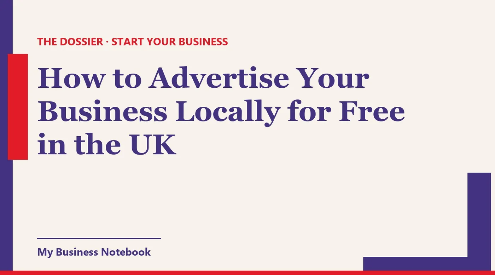

How to Advertise Your Business Locally for Free in the UK
Paid ads can wait. Most free local advertising in the UK is already within reach: your Google profile, the maps on people's phones, your town's Facebook group, Nextdoor, the noticeboard at the corner shop and the business next door. Here's how to use each one well, and the rules on reviews, messages and leaflets that catch new businesses out.

The short answer
You can advertise your business locally without spending a penny, as long as you spend a bit of time instead. The free channels that work in the UK are your Google Business Profile (posts, photos and reviews), the other maps, local Facebook groups and Nextdoor, a few good directories, noticeboards, the local paper, and other businesses who send people your way.
You don't need all of them. Pick four or five that suit your trade, do them properly, and keep them going every week. If you've only just registered and still need the basics, start with our guide on how a sole trader gets their first customers.
How to boost my Google Business page for free
Treat your Google Business Profile as a free noticeboard, not a listing you set up once and forget. Google lets you publish three kinds of post from your profile: updates, offers and events.
These posts show on your profile in Search and Maps, so someone checking your opening hours also sees what you've been up to this week. An offer needs a title and start and end dates. An update can carry a photo and a button to your website.
- Post something new every week or two. A finished job, a seasonal slot, a new product on the shelf. Google archives posts after six months unless you set dates, and an empty feed looks like a closed business.
- Add real photos regularly. Your shopfront, your team, your work. People want to see what they're buying and where they're going.
- Keep your hours honest, bank holidays included. Nothing loses a local customer faster than a locked door at a time Google said you were open.
There's no free "boost" button here. What moves a profile is completeness, fresh activity and reviews.
How to get business on Google reviews
Ask. Most happy customers are willing, they just never think of it. Google gives you a review link and a QR code for exactly this: go to your Business Profile, select Read reviews, then Get more reviews, and copy the link.
Google suggests putting it on receipts, in thank you emails, at the end of a chat, or printing the QR code for your counter. It also mentions sharing it by email, WhatsApp or a Facebook post. One practical note: Google says the QR code can only be generated from a computer browser, not a phone.
Two rules you can't ignore
Google's rule: offering free or discounted goods or services in exchange for a review counts as fake engagement and is prohibited. So no "10% off if you leave us a review", not even a small one.
The law: the Digital Markets, Competition and Consumers Act 2024 bans fake reviews and concealed incentivised reviews, and the CMA published its guidance in April 2025. A fake review is one that claims to be based on a genuine experience when it isn't. The CMA gives asking a member of staff to review your product as an example of commissioning a review.
The CMA also warns against cherry-picking, which can mean encouraging only satisfied customers to leave reviews. The simple fix: ask everyone, in the same way, and reply politely to the bad ones too. The same guidance says emailing customers generally to ask if they'd like to leave a review is not prohibited.
Bing Places and Apple Business: the other maps
Not everyone searches on Google. Plenty of iPhone users find a café or a plumber through Apple Maps, and Bing runs its own business listings too. Both take an evening at most.
- Apple Business (business.apple.com) is where you claim your location on Apple Maps and control how you appear, with your logo, hours, images and key details.
- Bing Places for Business is Microsoft's equivalent for Bing search and Bing Maps. Use exactly the same name, address and phone number as on Google.
Whatever you do, write your name, address and phone number exactly the same way on every map. Small differences make you look like two different businesses.
How to advertise my business in Facebook for free
The free route on Facebook is local groups, not your own Page. Your Page reaches people who already follow you. A town or village group reaches the neighbours who don't know you exist yet.
- Read each group's rules first. Many only allow business posts on one day of the week or in a single weekly thread. Break the rule and the admin removes you, and with you the whole group.
- Answer questions before you advertise. When someone asks "does anyone know a good dog groomer?", a helpful reply with your name beats any ad. Link your Page so they can check your work.
- Post like a neighbour, not a brochure. A photo of today's job, where it was ("a kitchen in Headingley"), and how to book. Short and specific.
Watch out with direct messages
Cold private messages are riskier than they look. The ICO says the PECR rules on electronic mail cover emails and texts, and also direct messages via social media. Sole traders and some partnerships are treated as individuals, so marketing messages to them need their consent. Let people come to you through your posts instead.
How to advertise my business on Marketplace
It depends on what you sell. If you make or sell physical things (cakes, candles, furniture, plants), Facebook Marketplace is a free shop window in your area.
If you sell a service, be careful. Meta's Commerce Policies say commerce content may not promote the buying, selling or trading of services, except on the WhatsApp Business app or through Appointments in Facebook or Instagram. A listing for "gutter cleaning, £40" can simply be taken down.
For services, the better free options on Meta are your Page, local groups within their rules, and a WhatsApp Business account so customers can message you easily.
Nextdoor: recommendations from the neighbours
Nextdoor is built around your actual neighbourhood, which makes it one of the most local free channels you can get. Nextdoor says its Business Page is free and comes with unlimited free posts.
The real value is recommendations. When a neighbour asks for a window cleaner, others reply with names, and the page collects recommendations from your customers. You can also choose which nearby neighbourhoods see your posts, by radius or one by one.
Nextdoor notes that casual service providers, such as dog walkers or babysitters, need official business documents to verify their page before posting to the neighbourhood feed. Have your paperwork ready.
Local directories worth your time
A handful of well kept directory listings help people and search engines trust you. Fifty half finished ones don't. Choose the general ones people in your area use, plus the platform built for your trade (a trades directory, a wedding directory, a salon booking site).
Fill each listing completely, with the same details as your Google profile, and keep a note of every login. The day you change your number, you'll be glad you did.
Noticeboards, cards and leaflets
Old-fashioned doesn't mean dead. The corkboard at the corner shop, the library, the leisure centre or the community centre is read by exactly the local people you want. Ask before you pin, keep the card simple, and add tear-off strips or a QR code to your Google profile.
Leaflets through letterboxes are a classic for trades and takeaways. Know the rule first: GOV.UK says you may need council permission to hand out free printed material in council-controlled areas in England and Wales. You don't need it for letterboxes.
Where permission is required and you don't have it, GOV.UK warns of a fixed penalty of up to £150, or a fine of up to £2,500 and a criminal record. Handing out flyers on the high street? Check with your council first.
Local press and radio: give them a story
Local papers, community magazines, hyperlocal news sites and community radio all need local stories. "New business opens" is thin. Give them an angle with people in it.
- A former nurse opening a mobile foot care service.
- Your first apprentice, hired from the local college.
- A free workshop, a charity day, the reopening of an empty shop on the parade.
Send a short email to the newsdesk: what's happening, when, why it matters locally, a good photo and your phone number. Then follow up once. Parish and residents' newsletters often run notices too.
How to ask someone to promote your business
Ask businesses who serve your customers just before or just after you do. A wedding florist and a cake maker, a personal trainer and a physio, an estate agent and a removals firm. You send each other work, and nobody pays for ads.
Make the ask small and concrete. Something like: "I've just opened the dog grooming salon on Church Road. A lot of your customers have dogs. Could I leave a few cards on your counter? I'd be happy to recommend you to mine in return."
Then deliver your side. A partnership where only one person sends customers doesn't last long.
Referral cards that actually get handed on
A referral card gives a happy customer something physical to pass to a friend. Put your name, what you do, how to book, and a space to write the name of the person who referred them.
Many businesses add a thank you for referrals, such as money off the next visit. Keep this well away from reviews. A reward for a review breaks Google's policy, and the CMA says an incentivised review must be clearly disclosed as such.
How to advertise my hair business online: an example
Take a hairdresser working from a small salon or from home. Here's a free week that uses most of the channels above.
- Monday: Google Business Profile checked, three new photos of real styles, one update post about late evening slots.
- Tuesday: review link sent to every client from the past month, not just the regulars.
- Wednesday: a before and after photo in the town's Facebook group on the day business posts are allowed, and a post on your Nextdoor Business Page.
- Thursday: referral cards left with the nail technician and the bridal shop down the road, with an offer to return the favour.
- Friday: a card on the noticeboard at the gym, and Apple Business and Bing Places claimed if they weren't already.
Swap "hair" for your own trade and the week works much the same. Free advertising is steady work, a little every day, rather than one big push.
The tool that saves you the legwork
All of this can be done by hand. The hard part is keeping it up: listings go out of date, review requests get forgotten, and the partnership list lives on a sticky note. That's why we recommend Kaptor, a platform built for small businesses that want to be found locally and win customers.
Kaptor
Kaptor brings together what usually takes a pile of separate tools:
- Visibility: your business listed on the directories that matter for your country and trade (more than 120 listings), with the same details everywhere, tracked listing by listing, and alerts when something goes out of date.
- Google Business Profile: help creating or claiming it, a heads-up on missing fields, and help asking for and tracking reviews.
- Prospecting: businesses to contact by trade and area (a town, a region or another country), with contact details, ranked by AI from hottest to coldest, in a pipeline from "to contact" to "won". Handy for finding local partners.
- Emails and follow-ups: sent from your own address or domain, automatic follow-ups, unsubscribe built in, replies in one place. Nothing goes out without your approval.
- Website or blog: no website? Kaptor generates one with a contact form. Already have one? It generates an SEO blog that points back to it.
You can open a free space to try it. Paid plans are Starter at $89 a month, Growth at $149 and Agency at $499, billed in US dollars, with no contract.
Where can local customers find you today?
Kaptor's free audit searches for your business on the directories in your country and shows you where you're listed, and where customers can't find you. No card, no sign-up.
Run my free auditRead next: for registration, outreach and the UK email rules, see Sole Trader? How to Get Customers as a New Business.
FAQ
How do I advertise my business locally for free?
Complete your Google Business Profile and post on it regularly, ask every customer for a review, claim Apple Business and Bing Places, post in local Facebook groups and on Nextdoor within their rules, pin cards on noticeboards and team up with businesses that share your customers.
How to advertise my business on Google for free?
A Google Business Profile costs nothing. Fill in every field, add real photos, publish updates, offers or events from your profile, and share your review link or QR code with customers.
Can I offer a discount in exchange for a Google review?
No. Google treats free or discounted goods or services in exchange for reviews as fake engagement and prohibits it. In the UK, the DMCC Act 2024 also bans concealed incentivised reviews.
Can I advertise a service on Facebook Marketplace?
Meta's Commerce Policies say commerce content may not promote the buying, selling or trading of services, apart from the WhatsApp Business app and Appointments on Facebook or Instagram. Marketplace suits physical products better.
Do I need permission to hand out leaflets?
In England and Wales you may need council permission to hand out free printed material in council-controlled areas. GOV.UK says you don't need it to put leaflets through letterboxes.
Can I send a Facebook message to promote my business to local people?
Be careful. The ICO says PECR covers direct messages via social media as well as emails and texts. Marketing messages to individuals, including sole traders, generally need their consent.
Official sources
- Google Business Profile Help: Create posts on your Business Profile : updates, offers and events, where posts appear, six month archiving.
- Google Business Profile Help: Create a Google link or QR code to request reviews : steps, where to share it, QR codes on a computer browser only.
- Google Business Profile Help: Tips to get more reviews : incentives for reviews are prohibited as fake engagement.
- GOV.UK: CMA guidance on fake reviews (CMA208) : the DMCC Act 2024 ban on fake and concealed incentivised reviews, cherry-picking, what is allowed.
- ICO: Electronic mail marketing (PECR) : social media direct messages count as electronic mail, sole traders treated as individuals.
- GOV.UK: Permission to distribute leaflets (England and Wales) : council permission, letterbox exemption, penalties.
- Meta: Commerce Policies : services may not be bought or sold through commerce content, with exceptions.
- Nextdoor: Create a free Business Page : free page, unlimited free posts, recommendations, verification for casual service providers.
- Apple Business : claim your location on Apple Maps and control how it appears.
- How to Get Your Business on Google Maps for Free (Step by Step)
- Got your ABN? Here's how to get your first customers
- How to Get Your New Business Noticed (Even With No Marketing Budget)
- How to Market a Small Business Locally: A Playbook for Service Trades
- Registered Your Sole Proprietorship? How to Get Your First Customers in Canada
- Sole Trader? How to Get Customers as a New Business
- Sole Trader in Ireland: From CRO Registration to Your First Clients